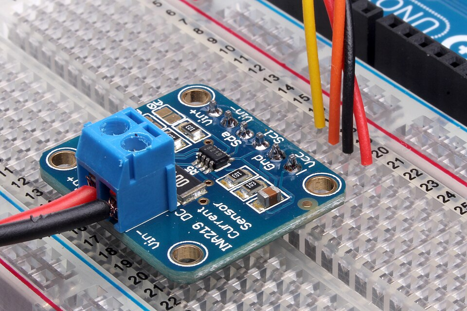
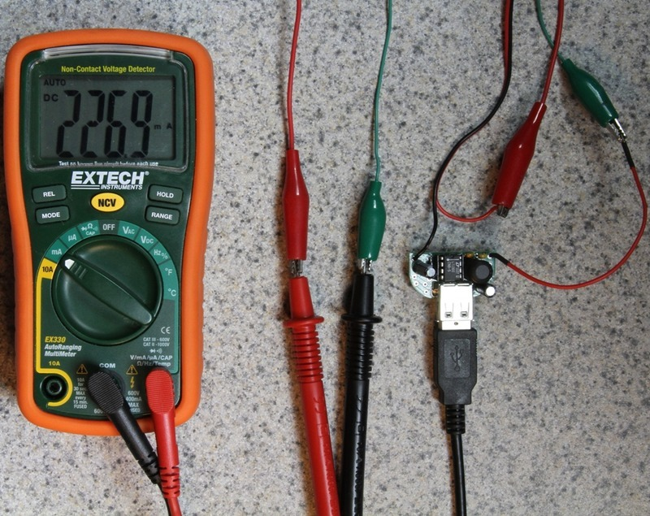

Log DC power and explain a short battery runtime
A project uses 250 mA when active, yet the battery dies sooner than expected. Measure actual power over the full cycle and check which side of the regulator you measured.
A current-limited 5 V bench source, resistor or your low-voltage microcontroller load, a voltmeter, and an INA219 breakout or safe inline DC meter rated for the load. The sample profile requires a spreadsheet only.
Point to the shunt, source and load
A shunt carries current and develops a small voltage. A high-side current monitor reads that difference near the supply positive wire. On the INA219 trainer, wire bus current through the module’s IN+ and IN− terminals in the documented direction. Its low-voltage logic connector powers and communicates with the chip. Follow the board instructions for logic voltage, load rating and common ground.

Photo by oomlout, scaled for the course, with labels added. Original · CC BY-SA 2.0.


Photo by Bill Earl for Adafruit, scaled for the course. Original photo · CC BY-SA 3.0.
Texas Instruments INA219 reference · Illustrated Adafruit breakout guide.
Log one full operating cycle
- At a known steady load, compare your monitor to a reference meter. With a suitable 100 Ω, 1% resistor on a 5.0 V supply you expect about 50 mA and 0.25 W. Use a 0.5 W or larger resistor and keep it clear of wiring.
- Measure voltage and current at the same place for idle and active portions of the real duty cycle. If readings are averaged, sample fast enough for the shortest state of interest or explicitly record the sampling limit.
- Save timestamp, state, voltage and current. Multiply to get watts and integrate power over time. With uneven sampling intervals multiply each representative sample by the interval it represents.
| State | Duration in a 60 s cycle | Voltage and current | Energy |
|---|---|---|---|
| Idle | 50 s | 5.0 V × 30 mA = 0.15 W | 7.5 J |
| Active | 10 s | 5.0 V × 250 mA = 1.25 W | 12.5 J |
| Total | 60 s | Average 0.333 W | 20 J ≈ 0.00556 Wh |
Watch on YouTube · Compare the logic wiring with the separate current path, then check the readings when the load changes. INA219 Current Sensor Tutorial (with Arduino) · Gemsung Electronics.
Explain the difference between a rough estimate and a test
At an average 0.333 W, a hypothetical battery delivering 2.0 Wh at the measured output could cover about 6 hours. A battery specification of 2.0 Wh before conversion yields less useful output at that load. Different cutoff voltages, current peaks, conversion losses and temperature can shorten the measured result. Compare like-for-like voltage and location. A 2 Ah rating alone cannot provide energy in Wh until you know the voltage.
Turn a software feature off and log another equal-length run. A slow monitor can miss brief peaks during Wi-Fi transmission. Compare against the unit’s published sampling and averaging settings if drops or resets persist.
Hand over a measured power budget
Write down power in idle and active, duty cycle, average energy per hour, conditions and the circuit point measured. State which assumptions the estimate uses and confirm the fix with a repeat measurement.
T03 · Power, energy and heat
T28 · Lithium-ion cells, charging and protection
T35 · Calibration, uncertainty and condition measurements